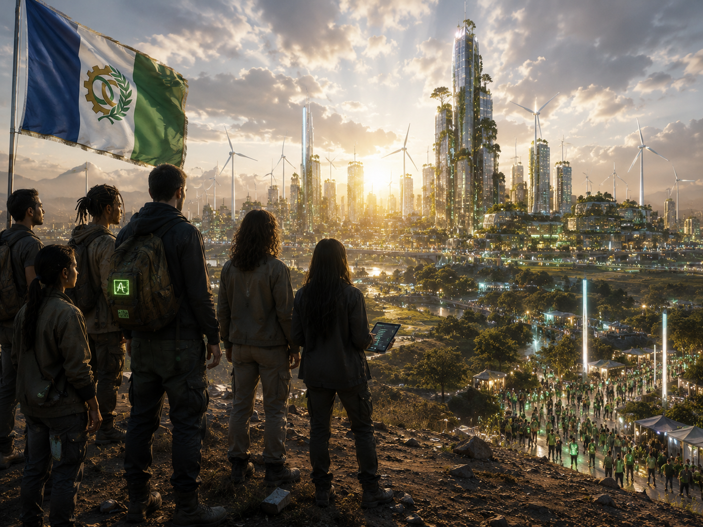
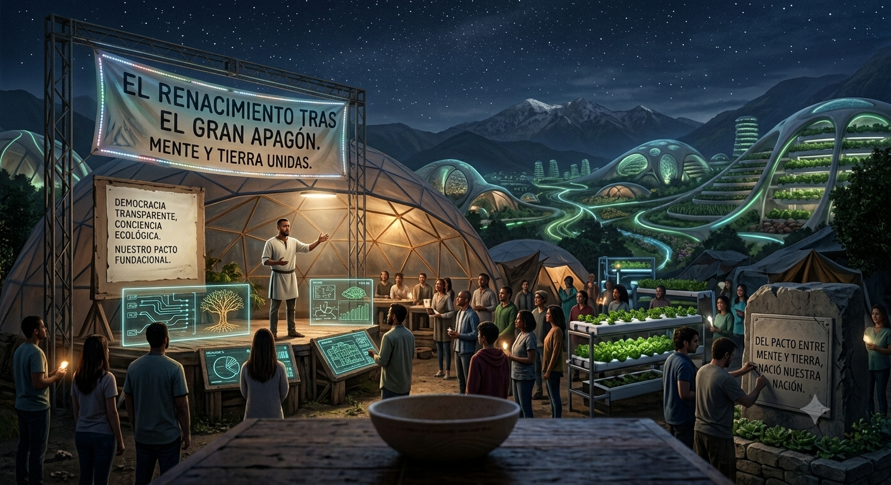
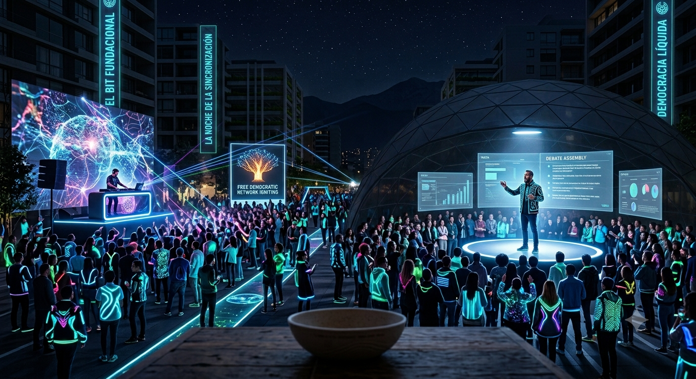
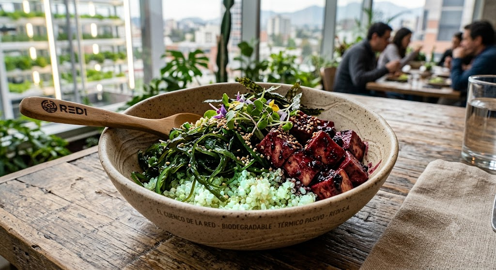

Historia, Tradición y Cultura: El Despertar de Nexa
Nuestra cultura no nació de la guerra, sino de una promesa: la de aprender de los errores del pasado para diseñar una sociedad más libre, consciente y conectada. Cada una de nuestras tradiciones refleja el triunfo de la comunidad sobre el caos.
El Origen Histórico: El Renacimiento tras el "Gran Apagón"
Nexa no se construyó sobre fronteras antiguas, sino sobre una gran esperanza. Tras la crisis global conocida como El Gran Apagón del Viejo Mundo, la humanidad se vio forzada a elegir un nuevo camino. Fue entonces cuando un colectivo pionero de programadores, filósofos y ecologistas dio un paso al frente. Demostraron al mundo que la tecnología no tenía por qué ser fría, destructiva o monopolística; gobernada de forma democrática, transparente y consciente, la ciencia era la única herramienta capaz de salvar tanto a la humanidad como al planeta. De ese pacto entre mente y tierra nació nuestra nación.


Efeméride Nacional: "La Noche de la Sincronización" (12 de Octubre)
Cada 12 de octubre, Nexa celebra su noche más mágica y esperada. Conmemoramos el instante exacto en el que se encendió la primera red democrática libre de nuestra historia, el bit fundacional de nuestra Democracia Líquida. Al caer el sol, toda la población realiza un apagón doméstico voluntario en sus hogares para sanar la red eléctrica y contemplar el firmamento. Las calles se llenan de vida, luz y color: los nexianos visten ropas fotoluminiscentes que brillan en la oscuridad mientras participan en festivales de música electrónica, proyecciones artísticas al aire libre y grandes asambleas de debate público bajo las estrellas. Es la noche en la que paramos las máquinas para conectarnos entre nosotros.
Gastronomía Típica: "El Cuenco de la Red"
Nuestra cocina es pura innovación culinaria y sostenibilidad, diseñada para nutrir el cuerpo y respetar la biosfera. Nuestro plato nacional por excelencia es "El Cuenco de la Red", una delicia que fusiona los tres biomas del país:
- La Base: Quinoa luminiscente cultivada de forma hidropónica en nuestros laboratorios agrícolas urbanos.
- El Contraste: Algas crujientes y frescas recolectadas de las aguas puras del Río Flujo.
- La Proteína: Tofu orgánico marinado en una reducción de bayas silvestres de la Cordillera del Silicio. Innovación en la mesa: Fieles a nuestra ley de sostenibilidad, este plato se sirve exclusivamente en boles biodegradables con conductividad térmica pasiva. Un diseño inteligente que mantiene los alimentos a la temperatura perfecta de forma natural, sin consumir energía exterior.
